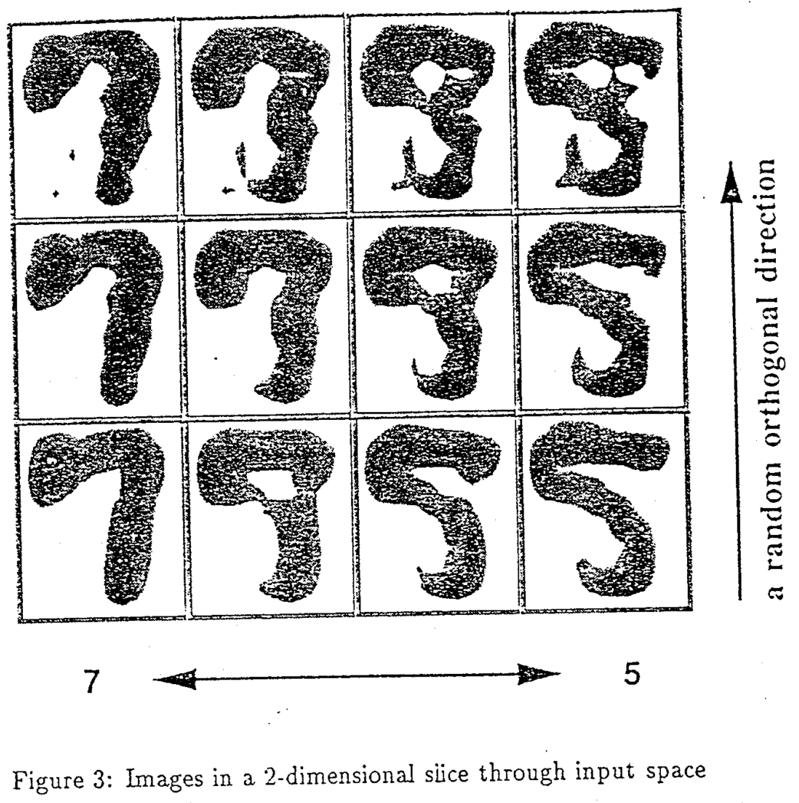

When a machine learning model has low confidence in its judgment in a particular case, it can be helpful to defer the decision to a human user. This is the assumption with which Kevin Lang and Eric Baum were working, when attempting to improve their model. The model was supposed to perform handwritten digit classification, that is, looking at images of handwritten numbers and working out what numbers they were. Baum had previously worked out that if you train a model on a number of examples, the model is least certain in areas where it had seen the fewest training examples, and so a reasonable approach was to try and interpolate or 'blend' between training examples to find an example somewhere in between, and then ask a human to label that number. This should reduce the model's uncertainty because now it has a new reference point where it previously didn't (and in particular, where it seemed to really need one).
In order to test this out, Lang and Baum had a human participant perform the following task. They selected 62 pairs of handwritten digits, and presented the participant with an interface that allowed them to move the mouse to explore different 'blends', or different points in the interpolation between the digits. The participant was instructed to explore the space, and select the point at which they believed the first digit was no longer recognisable. The following figure illustrates what the participant might have seen when exploring the space between a '7' and a '5'.
The authors then trained a model with these special human-generated labels and compared it to models trained using other, fully-automated approaches. The result was somewhat surprising: the human-assisted model was one of the worst performing! What was going on here? The authors followed up the experiment with a simple test that asked the participant to re-label the 'boundary' examples they had previously provided, and found that they were unable to reliably reproduce the expected labels. The authors conclude: ''We now believe that the ambiguous boundary patterns on which the [...] algorithm focuses its attention lie outside the range of human competence that we had been hoping to harness.''
In other words, people aren't good enough at labelling really ambiguous cases, and can't be expected to do so reliably. Granted, this study had only a single participant, but the difficulty with labelling ambiguous concepts has since appeared in many other labelling domains and much larger participant samples. But you needn't look further than the figure above to understand the problem: examples in the 'in-between' spaces where the model is uncertain, can also be the very examples where human judgment breaks down.
Baum, E. B., & Lang, K. (1992). Query learning can work poorly when a human oracle is used. In International joint conference on neural networks (Vol. 8, p. 8).
TODO: follow up with links to techniques for mitigating labelling issues, other papers where labelling as an issue has been tackled directly, and papers where human oracles are actually good.